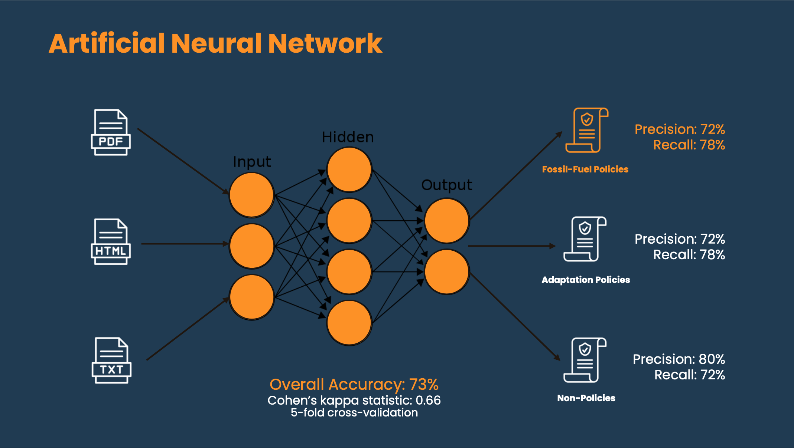

Portfolio

1. Automated Fossil Fuel Policy Tracker
As part of my Data Science Fellowship with Faculty AI, I worked together with the The Fossil Fuel Non-Proliferation Treaty Initiative (FFNPT). The FFNPT Initiative is a global NGO empowering policy advisers, activists, and researchers to facilitate a rapid global transition away from fossil fuel toward clean energy. The Initiative has recently been endorsed by 101 Nobel Laureates and is rapidly gaining international traction.
I had the pleasure to work with the FFNPT on a Data Science project in which I programmed an interactive Online App, using web-scraping and Natural Language Processing (Artificial Neural Network) to automatically identify, filter, and visualize relevant policies globally.
In the video below, I present my work and the App in more detail.
Here, you can check out the Online App.
2. Natural Language Processing
As part of the Fossil Fuel Policy Tracking App, I used Natural Language Processing to classify specific policy text data. Understanding how supply-side fossil fuel policies develop across countries is critical to ensure timely and effective climate actions across multiple levels and scales. Studying climate change supply-side fossil fuel policies has become increasingly difficult, particularly given the increasing volume of potentially relevant data available, the validity of existing methods handling large volumes of data, and comprehensiveness of assessing ongoing developments over time. In this project, I utilized machine learning to assist the FFNPT Initiative, collaborators, and researchers when conducting policy research using text as data. Specifically, I trained an Artificial Neural Network model to classify policy texts using data from various sources such as news-articles and official government databases. The main goal of this model is to take text data as input and be able to produce a label to classify these as ‘Fossil-fuel related’, ’Non-fossil-fuel related’, or ‘Non-climate policies’ with a certain probability. Having such an automated classification model saves a significant amount of time and resources and allows for a real-time tracking of fossil-fuel policy developments.
The results of the model evaluation showed an overall accuracy of 73% with a precision of 72% and recall of 78% for fossil-fuel policies.

The source code for the Artificial Neural Network is available in my Github
3. Machine Learning & Climate Change
In my role as a Postdoctoral Research Associate & Data Scientist with The University of Cambridge, I have worked with big data sets using Machine Learning Algorithms to identify the most robust predictors of Climate Change Attitudes and Policy Preferences. The Figure below depicts the overall research scheme:

Some of the results of this line of work is available below: